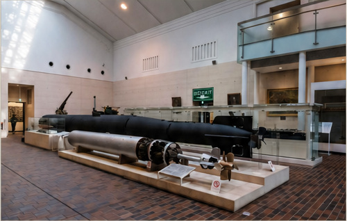

Yasakuni Shrine
| Location | 3 Chome-1-1 Kudankita, Chiyoda City, Tokyo 102-0073, Japan |
|---|---|
| Visited | 27 October 2013 |
| Website | Yushukan Museum│Yasukuni Jinja |

(Author's photograph, 27 October 2013)
Museum Report
The Yasakuni Shrine in Tokyo was built in 1869 to commemorate soldiers who had fallen in the service of the Emperor. About 2.5 million souls are named, which controversially includes 14 convicted Class A war criminals who were added to the list in 1978 (apparently in secret).
The shrine incorporates a military museum – the Yūshūkan - originally opened in 1882, which contains many war vehicles, tanks and weaponry. The naval element of the collection includes a number of guns, paintings and models, plus two museum ships.
The first is a Kaiten midget submarine / human torpedo – one of two such vessels preserved in museums (the other is in Pearl Harbour, although there is also a Kaiten prototype preserved at the Yamato museum in Kure, and a replica Kaiten at the Hiji Oga Kaiten Memorial Park).
The second preserved vessel is a Shin’yō explosive motor boat, which I inexplicably failed to take a photograph of! This is one of only three surviving examples of these boats that I am aware of (the others are held by the Australian War Memorial, and the USS Alabama Battleship Memorial Park, however I don’t think either of those is currently on display).
The Yūshūkan is a well-presented museum which is worth seeing if you are in Tokyo. You can access the entrance hall for free, however you will need a ticket to visit the main galleries.